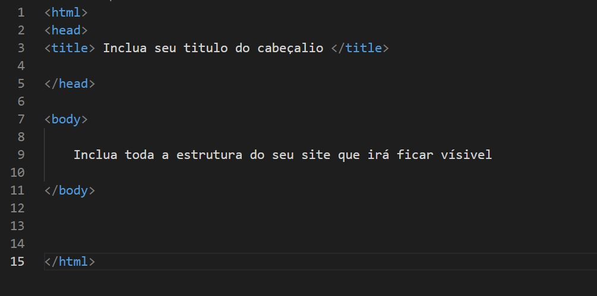

O início do HTML começou quando Tim Berners-Lee o criou na década de 90 e o seu significado é HiperText Markup Language, traduzindo para o português é Marcação de Hipertexto. Pode se dizer na linguagem de programação que o HTML é o “esqueleto” de uma página na Web. Ele é o que organiza os elementos e informações dentro de um website. Títulos, parágrafos, imagens, link direcionáveis e outros é o HTML que junta tudo isso e entrega para o usuário essas informações todas já bem compatibilizadas e com possíveis interatividades.
O HTML funciona atráves de arquivos em formato de extensão .html ou .htm estes que podem ser criados a partir de algum editor de texto podendo ser utilizado inclusive o bloco de notas. Um bastante conhecido entre os desenvolvedores é o VS Code(Visual Studio Code) - link para página do site.
Depois entra os navegadores(Google Chrome, Mozila Firefox, Microsoft Edge, Opera entre outros) para fazer todo o processo de renderização e carregar o website.
Com um editor de texto aberto já é possível dar inicio na estrutura do HTML, e para dar início na sua estrutura é preciso elementos inicias ou mais especificamente tags iniciais.
A primeira etapa fundamental para o funcionamento do arquivo é uma estrutura de abertura <html> e uma de fechamento</html>. Tudo que estiver inserido entre essa primeira estrutura é o seu código HTML
É importante também ressaltar que a maioria das tags criadas no arquivo html tem a parte de abertura e outra de fechamento compostas pelos símbolos do exemplo em negrito acima.
Logo depois disso é preciso criar também a parte inicial do seu website que é o cabeçalio do seu site que são os elementos que vão ser carregados antes de carregar a página ao usuário, mais conhecido como head. Para isso também é preciso outra estrutura de abertura e fechamento ficando assim: <head> ‘elementos a serem inseridos’ </head>
E por último vem o corpo do seu arquivo(body), aonde vai conter toda a estrutura do seu website que irá ficar visível ao usuário. E novamente consiste na abertura do <body> e seu fechamento </body>
Como exemplo de uma estrutura base de HTML, temos essa imagem abaixo:

As tags são códigos que definem toda a estrutura da página, tais como o seu tamanho, a fonte da letra, os espaçamentos, a listagem de itens, a criação de links, a criação de botões as quebras de linha e etc. É através delas que conseguimos dar vida ao nosso arquivo html.
E como já mencionado acima a maioria das tags consiste em um elemento de abertura e outro de fechamento, salvo algumas exceções que não tem fechamento, exemplo: <input/>, <br/>, <img/> entre outras.
Se você quiser por exemplo dar um titulo a sua página você poderia usar a tag h1
<h1> Meu titulo <h1/>
E o resultado ficaria assim:
Para conseguir criar uma experiencia completa de website hoje é comum utilizarmos juntamente do HTML outros dois programas que são o CSS e o JavaScript
Basicamente o site funciona em três camadas a primeira é estruturação das informações composta pelo HTML, a segunda é feita pelo CSS que consiste na estilização da página, como cores do texto ou do background, formato e tamanho das fontes, etc. Por fim temos a terceira camada que as vezes não necessarimante é utilizada, porem é esta que consiste em criar a real interatividade do site, captação de dados, transformação de conteúdo, análises, cálculos e outras funções, é ela que possibilita a maior interatividade ao usuário e é feita pelo JavaScript.
Então a área que visa demostrar o conteúdo de forma direta para o cliente é a denominada na programção de Front-end, área em que o desenvolvedor estuda a criação de elementos mais interativos visuais diretamente com o cliente.
Se você gostou do conteúdo e quer aprender mais sobre HTML e outros programas de programação recomendo conhecer a plataforma da DIO E se possível me sigam no GitHub e Linkedin